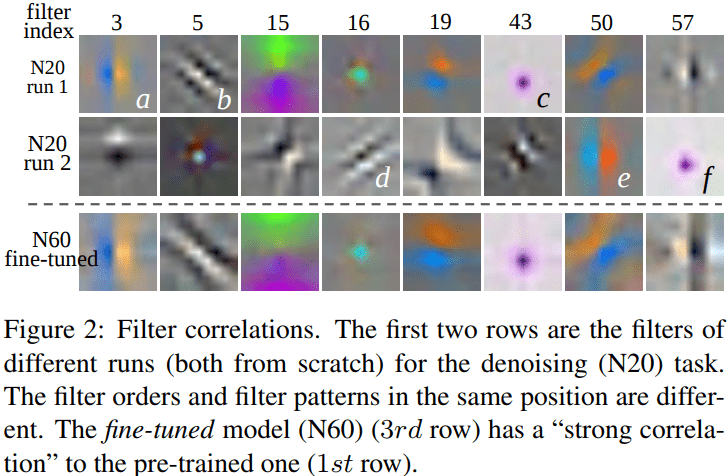
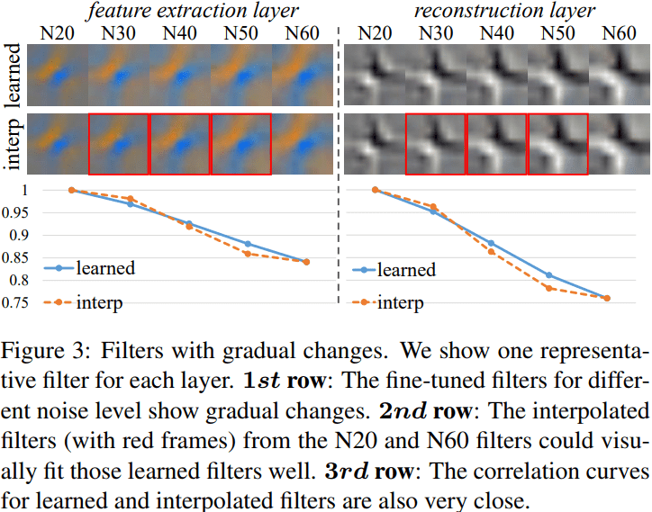
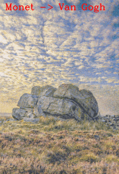
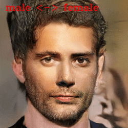
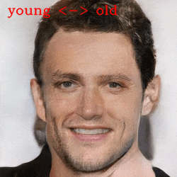

Deep Network Interpolation
for Continuous Imagery Effect Transition
2 Shenzhen Institutes of Advanced Technology, Chinese Academy of Sciences
3 Nanyang Technological University, Singapore
Deep network interpolation is capable of generating continuous imagery effect transitions. (1st row) from MSE effect to GAN effect in super-resolution; (2nd row) from Van Gogh style to Ukiyo-e style; (3rd row) from day photo to night one; (4th row) from deep depth of field (DoF) to shallow one.
The following is a YouTube video showing several DNI examples. See Applications for more details.
Highlights
- We propose a simple yet universal approach - deep network interpolation, for smooth and continuous imagery effect transition without further training.
- Different from previous works operating in the feature space, we make an attempt to investigate the manipulation in the parameter space of neural networks.
- Our analyses show that learned filters for several related tasks exhibit continuous changes. We believe that it is worth exploiting the underlying correlations of learned filters to further extend the ability and practicality of existing models.
Abstract
Deep convolutional neural network has demonstrated its capability of learning a deterministic mapping for the desired imagery effect. However, the large variety of user flavors motivates the possibility of continuous transition among different output effects. Unlike existing methods that require a specific design to achieve one particular transition (e.g., style transfer), we propose a simple yet universal approach to attain a smooth control of diverse imagery effects in many low-level vision tasks, including image restoration, image-to-image translation, and style transfer. Specifically, our method, namely Deep Network Interpolation (DNI), applies linear interpolation in the parameter space of two or more correlated networks. A smooth control of imagery effects can be achieved by tweaking the interpolation coefficients. In addition to DNI and its broad applications, we also investigate the mechanism of network interpolation from the perspective of learned filters.
Deep Network Interpolation (DNI)
DNI achieves continuous imagery effect transition via linear interpolation in the parameter space of existing trained networks. Specifically, consider two networks $G_{\theta}^{A}$ and $G_{\theta}^{B}$ with the same structure, achieving different effects $\mathcal{A}$ and $\mathcal{B}$, respectively. We assume that their parameters $\theta_{A}$ and $\theta_{B}$ have a ''strong correlation'' with each other, i.e., the filter orders and filter patterns in the same position of $G^{A}$ and $G^{B}$ are similar. This could be realized by some constraints like fine-tuning or joint training. This assumption provides the possibility for meaningful interpolation.
DNI interpolates all the corresponding parameters of the two models to derive a new interpolated model $G^{interp}$, whose parameters are: \begin{equation} \theta_{interp} = \alpha \ \theta_{A} + (1-\alpha) \ \theta_{B}, \end{equation} where $\alpha \in [0, 1]$ is the interpolation coefficient. Indeed, it is a linear interpolation of the two parameter vectors $\theta_{A}$ and $\theta_{B}$. The interpolation coefficient $\alpha$ controls a balance of the effect $\mathcal{A}$ and $\mathcal{B}$. By smoothly sliding $\alpha$, we achieve continuous transition effects without abrupt changes.
Generally, DNI can be extended for $N$ models, denoted by $G^{1}, G^{2}, ..., G^{N}$, whose parameters have a ''close correlation'' with each other. The DNI is then formulated as: \begin{equation}\label{eq:DNI_Nmodels} \theta_{interp}=\alpha_{1} \theta_{1} + \alpha_{2} \theta_{2} + ... + \alpha_{N} \theta_{N}, \end{equation} where $\alpha_{i}$ satisfy $\alpha _{i}\geq 0$ and $ \alpha _{1}+\alpha _{2}+\cdots +\alpha _{N}=1$. In other words, it is a convex combination of the parameter vectors $\theta_{1}, \theta_{2}, ...,\theta_{N}.$ By adjusting $(\alpha_{1}, \alpha_{2}, ..., \alpha_{N})$, a rich and diverse effects with continuous transitions could be realized.
It is worth noticing that the choice of the network structure for DNI is flexible, as long as the structures of models to be interpolated are kept the same. Our experiments on different architectures show that DNI is compatible with popular network structures such as VGG, ResNet and DenseNet.
See our paper for more details.
Understanding Network Interpolation
We attempt to gain more understanding on network interpolation from some empirical studies. From our experiments, we observe that:
- Fine-tuning facilitates high correlation between parameters of different networks, providing the possibility for meaningful interpolation.
- Fine-tuned filters for a series of related tasks present continuous changes.
- Our analyses show that interpolated filters could fit the actual learned filters well.
See our paper for more details.
|  |  |
Applications
1. Image Restoration - Balance MSE and GAN effects in super-resolution.
The MSE effect is over-smooth while the GAN effect is always accompanied with unpleasant artifacts (e.g., the eaves and water waves). DNI allows smooth transition from one effect to the other and produces visually-pleasing results with largely reduced artifacts while maintaining the textures. In contrast, the pixel interpolation strategy fails to separate the artifacts and textures.

2. Image Restoration - Adjust denoising strength.
It is desired to adjustable denoising strength for satisfying various demands. For instance, popular image editing softwares like Photoshop, have controllable options for each tool. Denoising models without adjustment (with yellow frames) are unable to balance the noise removal and detail preservation. For the grass, a weaker denoising strength could preserve more textures while for the sky, the stronger denoising strength could obtain an artifact-free result, improving the visual quality (with red frames).
We further present an application of spatial control for adjustable denoising. For the DSLR photos with shallow depth-of-filed, the background is usually blurred while the foreground contains rich details. We can easily separate them with a mask and adopt different denoising strengths respectively. With adjustable denoising realized by DNI, the blurry area is more smooth without artifacts, while there are rich details in texture regions.
3. Image-to-image Translation - Photos to paintings.
DNI produces a smooth transition from Van Gogh’s style to Cézanne’s style both in the palette and brush strokes.
The following GIFs show smooth transitions among several painting styles: Monet -> Van Gogh -> Cézanne -> Ukiyo-e.

|
 |
4. Image-to-image Translation - Depth of Field (DoF).
Smooth transition on depth of field with DNI. However, pixel interpolation generates ghosting artifacts.
5. Image-to-image Translation - From day to night.
Day photos to night ones. As the night approaches, it is getting darker and the lights are gradually lit up, reflected on the water.
6. Image Style Transfer.
In image style transfer, without specific structures and strategies, DNI is capable of generating smooth transitions between different styles, from large strokes to small strokes, together with balancing the content and style.
7. Semantic Change - Smooth transitions on face attributes.
Smooth transitions on face attributes with DNI - from male to female, and from young to old.
|  |  |
8. Multi-ends DNI.
A general form of DNI is also capable of interpolating more than two networks. For example, transferring among different styles - Mosaic style, Candy style, Mondrian style and Udnie style; translating landscape photos to paintings with various styles - Van Gogh, Cézanne, Monet and Ukiyo-e.
Citation
@Article{wang2018dni,
author = {Wang, Xintao and Yu, Ke and Dong, Chao and Tang, Xiaoou and Loy, Chen Change},
title = {Deep network interpolation for continuous imagery effect transition},
journal = {arXiv preprint arXiv:1811.10515},
year = {2018}
}
Contact
If you have any question, please contact Xintao Wang at xintao.wang@outlook.com.